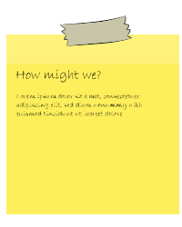
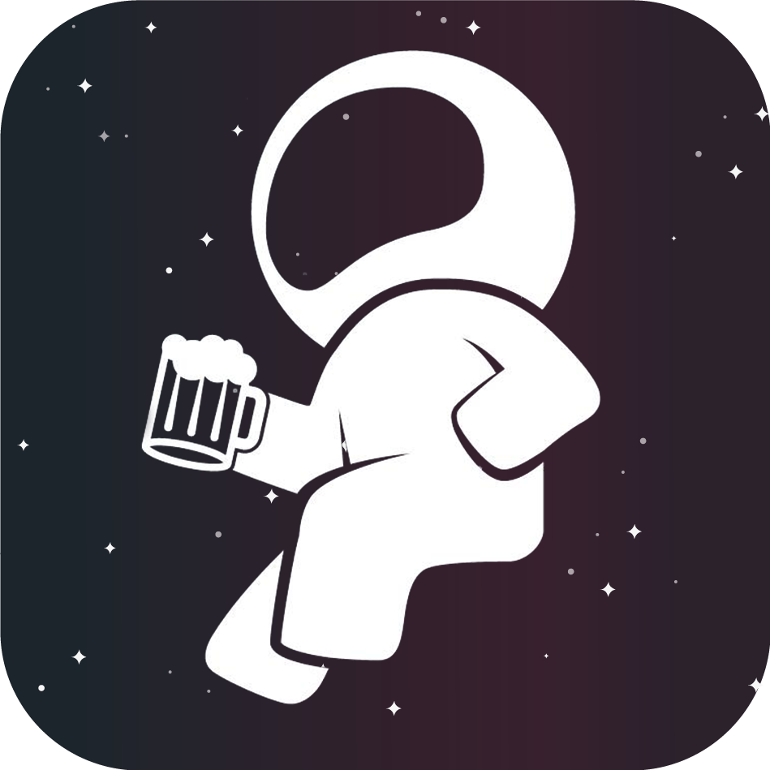

04.01.01
DESIGN SPRINT
OPGAVE:
Underviserne faciliterer et design sprint, igennem 5 dage. Sæt dig ind i metoderne og skab en prototype til et nyt fronter, med dokumentation.
LØSNING:
Ved hjælp af design sprint og alle dets metoder, har jeg skabt en prototype, til det jeg mener kunne være et nyt fronter vha. Adobe XD.
04.02.01
WEB PROTOTYPE

OPGAVE:
Kod en funktionel digital løsning på et nyt bud på en Fronter-løsning. Løsningen skal vises i en webbrowser på en smartphone.
LØSNING:
Vha. udleveret Adobe XD prototype, kodede jeg med HTML, CSS og JS en fronter-løsning. Jeg har brugt flexbox og holdt styr på opgaverne via. Trello.
04.03.01
DESIGN SPRINT: NATIVE APP
OPGAVE:
Afhold design sprint i en gruppe, med fokus på at skabe en native-app til studerende på KEA. Prototypen skal laves i Adobe XD.
LØSNING:
I vores gruppe afholdte vi design sprint med mål om at skabe en app til Lygten 16s fredags bar, Moon Bar. Vi brugte fire dage på sprint og dokumenterede undervejs.